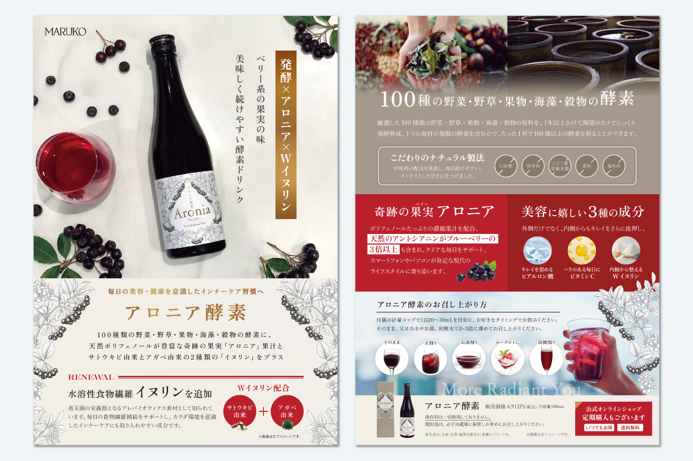
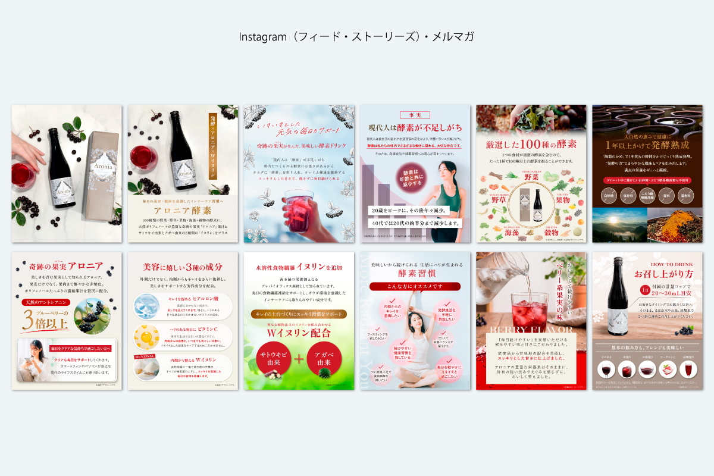
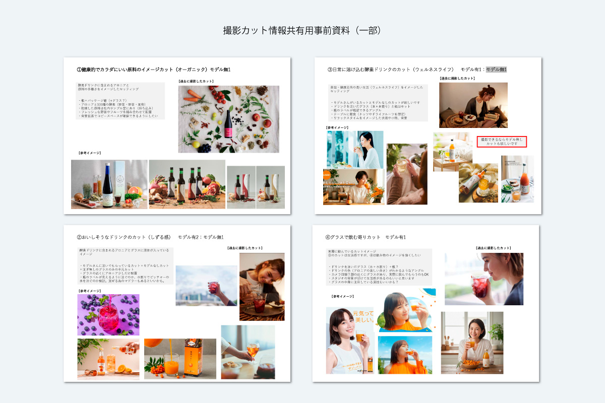
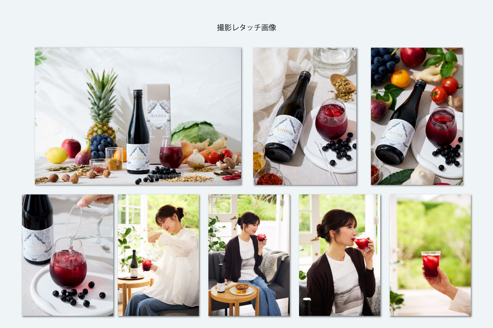

アロニア酵素R発売




Instagram投稿
| 制作期間 | 2026年8月 |
| 制作時間 | 約15時間 |
| 依頼元 | B&W |
| 媒体 | フライヤー、Instagram（フィード・ストーリーズ） |
| 使用アプリ | Illustrator、Photoshop、Adobe Firefly |
制作背景・意図
リニューアルするアロニア酵素の制作を担当しました。撮影の依頼から開発担当者へどのようなビジュアルやイメージにしたいかをヒアリングし、撮影依頼書として撮影チームに共有・打ち合わせいたしました。過去に撮影した写真から、普段制作で不要や必要だと感じたアングルや光量・時代に合わせたスタイリングも考えて資料にしました。
撮影現場に立ち合い、アロニア酵素の飲み方をレクチャー指示。モデルさんに実際に飲んでいただき、おいしそうな笑顔を引き出しながら撮影。小道具に原材料をご準備いただき、100種の酵素が凝縮された商品特長が伝わり、リブランディングに沿った画に仕上げることができました。
フライヤーはリニューアル前のレイアウトを見直し、アロニア酵素の赤色とパッケージの高級感あるモノトーン調のカラーで配色。時代に合わせて成分等のわかりやすいコピーも考え、薬事の言い換えも考えて記載しました。媒体画像の方ではより詳しく酵素の必要性や商品が必要な人はどんな方なのかのおすすめリスト等も入れて、購入検討の材料を増やしました。